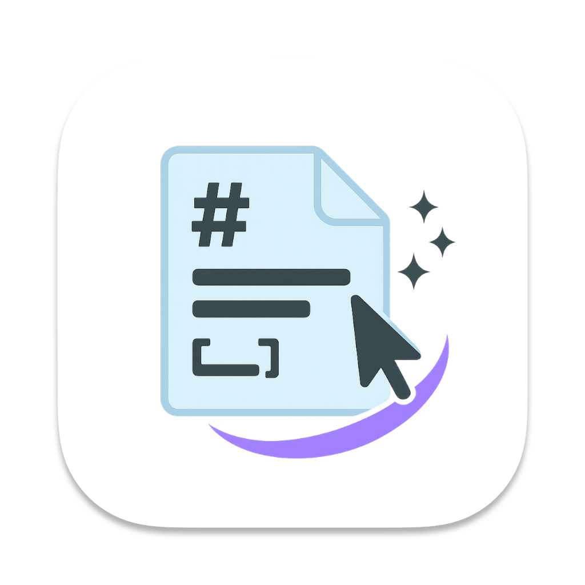

Version 0.33.1
A powerful rich text editor built with Meta's Lexical framework. Features comprehensive editing capabilities including tables, collaboration, code highlighting, and extensible plugins.